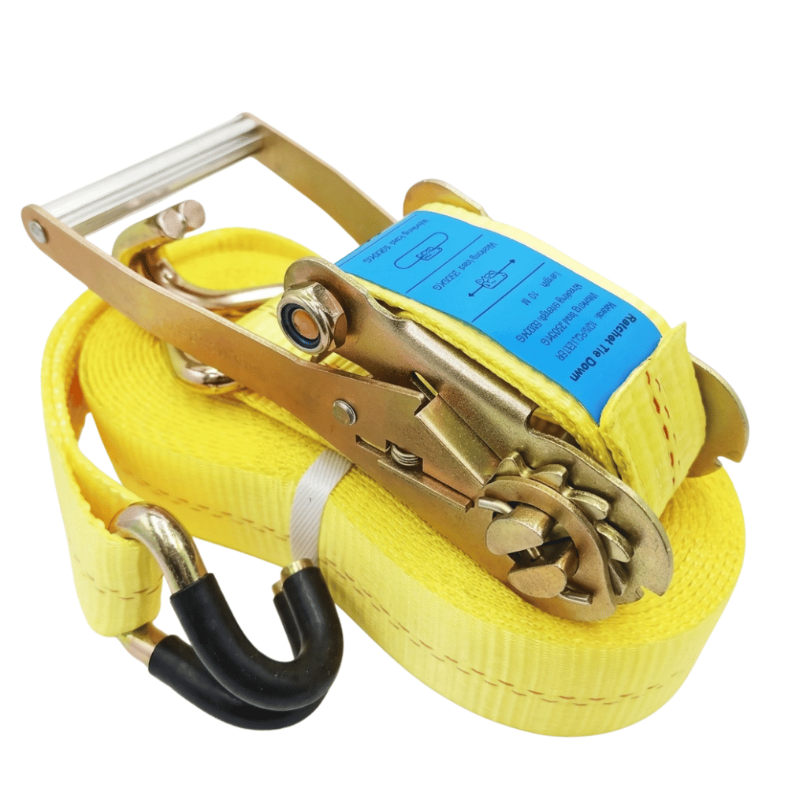

Premium Securement Features & Specifications
Built to withstand the punishing environments of international logisticsEUROPULL tie-down systems are meticulously crafted to reduce transit hazards and maximize the stability of your load. Each component is built to withstand the punishing environments of international logistics.
Premium Polyester Webbing
Constructed from top-tier polyester yarn to guarantee maximum grip and tensile strength without adding unnecessary weight to the operator's load.
Precision Tensioning
Integrates an industrial-strength ratchet buckle with our high-capacity straps, allowing operators to apply and maintain precise tension.
Heavy-Duty Anchoring
Fitted with robust Double J Hooks that establish a firm, slip-resistant connection to transport anchor points.
Multi-Industry Versatility
Extensively tested for securing heavy drum pallets, construction materials, and industrial pipework on commercial flatbeds.
Capacity Profiles & Technical Data
Our heavy-duty cargo securement line centers on two primary industrial weight classes| Webbing Width | Minimum Breaking Strength | End-Fitting Type | Tension Mechanism | Color Code |
|---|---|---|---|---|
| 2" (50mm) | 5,000 Kgs (5 Ton) | Double J Hook | Ratchet | Yellow |
| 3" (75mm) | 10,000 Kgs (10 Ton) | Double J Hook | Ratchet | Orange |
Choose Your Lashing System
Color-coded by capacity for instant identification on the job
5-Ton Cargo Lashing (2-Inch)
Designed for medium-to-heavy commercial freight, this system utilizes a standardized 2-inch yellow polyester strap. Boasting a 5,000 Kg minimum breaking strength, it comes standard with heavy-duty Double J hooks and a high-tension ratchet buckle—perfect for locking down construction supplies and palletized cargo safely during transit.
- Webbing Width2" (50mm)
- Breaking Strength5,000 Kgs
- End FittingDouble J Hook
- Color CodeYellow
10-Ton Cargo Lashing (3-Inch)
Built for the most extreme heavy-haul transport scenarios, this system delivers an immense 10,000 Kg minimum breaking strength. It features a wider, standardized 3-inch orange webbing, an oversized ratchet buckle, and reinforced Double J hooks. It is the premier choice for tying down massive steel piping, oversized industrial equipment, and heavy machinery.
- Webbing Width3" (75mm)
- Breaking Strength10,000 Kgs
- End FittingDouble J Hook
- Color CodeOrange
Supplying Logistics Hubs Across the Region
Cargo securement for flatbed fleets, ports, and project logisticsSaudi Arabia (KSA)
United Arab Emirates
Serving ports, free zones, and heavy transport fleets across the emirates.
Broader Middle East
Supply for oilfield logistics, pipeline projects, and cross-border haulage.
Africa Hubs
Port facilities, mining corridors, and resource development projects.
Secure Every Load With Confidence
Tell us your cargo, trailer type, and quantity, and our team will recommend the right lashing capacity and send you a quotation.
Frequently Asked Questions (FAQ)
Capacities, fittings, materials, and applications for EUROPULL cargo lashing beltsThe 2-inch strap is rated for a minimum breaking strength of 5,000 Kgs (5 Tons), whereas the heavy-duty 3-inch strap can handle up to 10,000 Kgs (10 Tons).
Both the 5-Ton and 10-Ton EUROPULL lashing assemblies feature industrial-grade Double J Hooks and heavy-duty ratchet tensioners as standard equipment.
Not at all. Because they are woven from advanced polyester yarn, they remain lightweight and highly manageable for transport operators, despite their massive load ratings.
They are crafted from premium-grade polyester yarn. This material choice guarantees that the straps are easy to deploy while providing exceptional durability and holding force during transport.
The versatile yellow 5-Ton belt is perfect for flatbed trucks transporting mid-weight loads, such as loaded pallets, heavy drums, and general construction materials.
The orange 10-Ton tie-down is engineered specifically for heavy-haul logistics. You should use it when transporting exceptionally heavy cargo like large steel pipes, heavy industrial components, and oversized machinery.
EUROPULL lashings follow strict industry color and width standards. The 5-Ton system uses a 2-inch Yellow strap, while the 10-Ton system uses a 3-inch Orange strap for immediate visual identification.